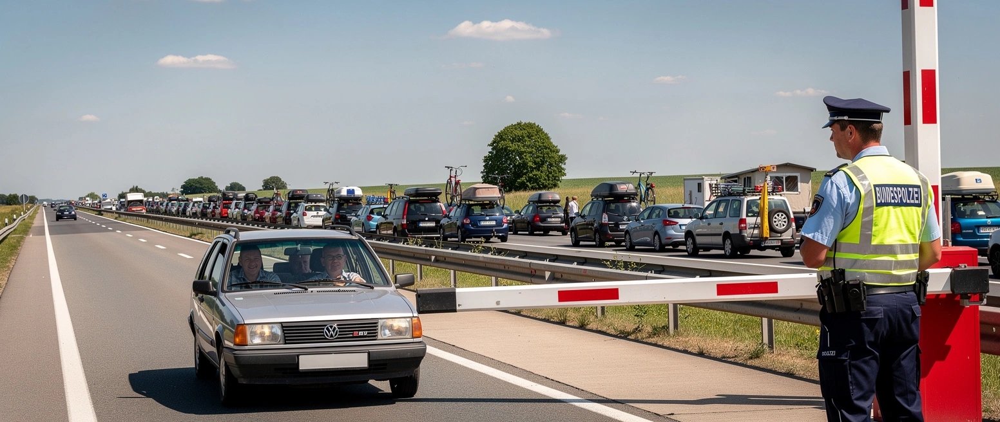

Wie die EU uns schützen will

Ein EU-Kommissar sorgt sich um den Stau. Vor der Reisewelle, sagt Magnus Brunner, drohten lange Wartezeiten an der deutschen Grenze. Es sei „an der Zeit“, die Kontrollen abzubauen.
Nur fahren die Urlauber hinaus. Nach Süden, für zwei Wochen, dann zurück. Der Schlagbaum stand nie für sie. Er steht für den, der herein will und bleibt. Brunner verkauft das Ende einer Einreisekontrolle mit dem Stau auf der Ausreisespur.
Das ist das Argument. Wer so etwas ernsthaft vorträgt, hält die Bürger für dumm.
Der Mann heißt Magnus Brunner, ÖVP. Also die Parteienfamilie von der Leyens und der CDU, die zu Hause den harten Grenzschützer gibt. In Brüssel öffnet sie die Grenze.
Dabei sind die Kontrollen ein Zugeständnis, das die Bürger erzwungen haben. Der Druck wurde zu groß, also kamen Beamte an die Grenze. Halbherzig, stichprobenartig, ein Bruchteil dessen, was nötig wäre. Und selbst dieses Mindeste ist Brüssel zu viel. Abschaffen will die Kontrollen ein Apparat, den niemand gewählt hat, mit einem Argument, das ein Dreijähriger auseinandernimmt. Wieder wird über unsere Köpfe entschieden, und wieder gegen uns.
Und die Bürger? 51 Prozent der Deutschen wollen die Grenzen für Flüchtlinge vollständig schließen, 62 Prozent halten viele Asylbewerber nicht für wirklich schutzbedürftig. Die Zahlen stammen von Ipsos, erhoben fürs UN-Flüchtlingshilfswerk, nicht von uns. Die Mehrheit ist da. Brüssel fährt dagegen.
Bleibt der Kinderschutz. Den kennt die Kommission gut, die Alterskontrolle fürs ganze Netz baut sie gerade darauf. An der Grenze fällt das Wort nicht. Dabei steht in der Polizeilichen Kriminalstatistik 2025, der Zahlensammlung des Staates selbst: Nichtdeutsche stellen 38,5 Prozent der Tatverdächtigen bei Vergewaltigung, 42,9 Prozent bei der Gewaltkriminalität, bei einem Bevölkerungsanteil von rund einem Siebtel. Das BKA überschreibt es selbst mit „weiterhin hohe Anzahl nichtdeutscher Tatverdächtiger“. Verdächtige, keine Verurteilten, und die Gewaltkriminalität ging insgesamt zurück. Aber wo Schutz einen belegbaren Anlass hätte, schweigt das Wort.
Schutz ist für Brüssel kein Ziel, nur ein Etikett. Es klebt auf allem, was Überwachung bringt, und fehlt, wo Schutz vor Kriminalität gemeint wäre. Aufs Netz wird es geklebt, von der Grenze abgezogen. Das ist keine Schlamperei, das ist Methode. Was die Bürger wollen, soll fallen. Was sie fürchten, soll kommen. Beide Male gegen die, die den Laden bezahlen.
Die tagesschau meldet das als Verkehrsproblem vor den Ferien. In welche Richtung der Verkehr fließt, steht nicht in der Überschrift.
Mehr dazu: Die Statistik, die keiner zeigt.